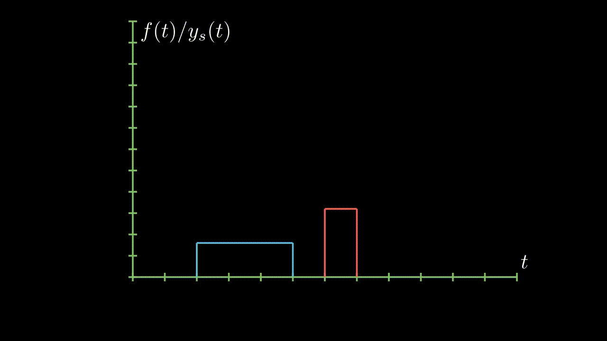

#TODO:优化内容和结构,补充更多关于卷积的基础.有时间的话用Manim制作视频.
数学定义
卷积是工程中十分参见和常用的操作.先上让人摸不着头脑的数学定义:
\(f_1(t)\)和\(f_2(t)\)是定义在\((-\infty,+\infty)\)区间上有两个函数,则卷积积分: \[ f_{1}(t) * f_{2}(t)=\int_{-\infty}^{\infty} f_{1}(\tau) f_{2}(t-\tau) \mathrm{d} \tau \] 简记为\(y(t)=f_{1}(t) * f_{2}(t)\).
从数学表达式角度看,涉及三个函数.其中两个函数是信号,另一个函数可认为是信号的传递函数. \[ f_1(t)\stackrel{f_2(t)}{\longrightarrow}y(t) \tag{2.1} \] 其中,而已把\(f_1(t)\)或\(f_2(t)\)看作信号,另外一个函数为系统的表示;则系统对信号的响应就是二者的卷积\(y(t)=f_1(t)*f_2(t)\).
物理意义:卷积揭示了LTI(线性时不变)系统零状态响应与输入信号和系统单位冲激响应之间的关系.
如何理解卷积
看不懂上面讲的啥玩意儿?很正常.下面慢慢解释.
楔子
在讲卷积之前,笔者先讲一点题外话.笔者在参加2019年“高教杯”全国数学建模比赛的时候,当时团队选的是C题,简单说就是合理规划机场出租车使之乘客和司机双赢.
建模过程中,我们刻画了一个客流量曲线(与原来有所出入) \[ y_p(t)=(t-t_p-15)^n e^{-a(t-t_p-15)} \tag{2.2} \] 其中,\(y_p(t)\)代表机场出口人流量,\(t\)代表时间,\(t_p\)代表一架特定机型的飞机抵达机场的时间,\(15\)是预估的乘客从机场空侧走到陆侧(也即从下飞机走到出口)的时间,\(n\)为常数.所以,这个函数刻画的是一架特定机型的飞机降落到一个出口没人的机场后,出口客流量与时间的关系.
如果是\(n\)架飞机(假定飞机都是同样的机型并且载客量相同)同时抵达机场(当然了,现实要依跑道数量而定;建模我们就不扣那么细了),那么机场出口客流量就是$y_{pn}(t)=n(t-t_p-15)^n e^{-a(t-t_p-15)} $.
如果是多架飞机在不同时刻抵达机场呢,我们如何计算这个客流量呢?我们只需要把不同的函数相加可以了: \[ \begin{aligned} y_{p1}(t)=&(t-t_{p1}-15)^n e^{-a(t-t_{p1}-15)} \\ y_{p2}(t)=&(t-t_{p2}-15)^n e^{-a(t-t_{p2}-15)} \\ y_{p3}(t)=&(t-t_{p3}-15)^n e^{-a(t-t_{p3}-15)} \\ &\cdots \cdots \\ y_{pn}(t)=&(t-t_{pn}-15)^n e^{-a(t-t_{pn}-15)} \\ \end{aligned} \] 将这些等式左右两边相加就可以得到中的客流量函数.
现在假定时间从\(1\) 到\(5\)之间每隔一分钟就有一架飞机降落,则我们用动画演示:
抽象
我们将上述的模型抽象出来,一架飞机抵达抽象为一个单位冲激信号\(\delta(t-t_p)\);机场出口抽象为一个系统,系统对单位冲激\(\delta(t- t_p)\)信号的响应就是\(y_p(t)=(t-t_p-15)^n e^{-a(t-t_p-15)}\).我们将系统表示为\(f_s(t)=(t-15)^n e^{-a(t-15)}\),则 \[ y_p(t)=(t-t_p-15)^n e^{-a(t-t_p-15)}=f_s(t)*\delta(t-t_0) \tag{2.3} \] 而时间从\(1\) 到\(5\)之间每隔一分钟就有一架飞机降落,表示为信号就是\(f(t)=u(t-1)-u(t-6)\)(这个信号实际上是离散信号,而系统是连续时间系统,为了方便,我们暂时把离散时间信号和连续时间系统混在一起.)
\[ \begin{align*} y_{pt}=&y_{1}(t)+y_{2}(t)+y_{3}(t)+y_{4}(t)+y_{5}(t) \\ =&(t-{1}-15)^n e^{-a(t-{1}-15)} \rightarrow f_s(t)*\delta(t-1) + \\ &(t-{2}-15)^n e^{-a(t-{2}-15)} \rightarrow f_s(t)*\delta(t-2) + \\ &(t-{3}-15)^n e^{-a(t-{3}-15)} \rightarrow f_s(t)*\delta(t-3) + \\ &(t-{4}-15)^n e^{-a(t-{4}-15)} \rightarrow f_s(t)*\delta(t-4) + \\ &(t-{5}-15)^n e^{-a(t-{5}-15)} \rightarrow f_s(t)*\delta(t-5) \\ =&f_s(t)*f(t)\text{ (Attention: $f(n)$ is a discrete time signal in essence)} \\ =&f_s(t)*[u(t-1)-u(t-6)] \end{align*} \tag{2.4} \] 这个计算过程就是卷积,卷积就是一种数学运算的定义,本质上就是加权求和.当然了式\((2.4)\)的计算过程只是为了方便理解,实际计算不用这么复杂.
现在我们将信号换做更一般的信号,动画演示如下:

连续信号的情况就是把离散的信号换成连续的,这个编程不难,就是渲染太久了,我就不做动画了.
卷积的暴力解释
\[ f(x) * g(x)=\int_{-\infty}^{\infty} f(\alpha) g(x-\alpha) \mathrm{d} \alpha \]
比如说你的老板命令你干活,你却到楼下打台球去了,后来被老板发现,他非常气愤,扇了你一巴掌(注意,这就是输入信号,脉冲),于是你的脸上会渐渐地(贱贱地)鼓起来一个包,你的脸就是一个系统,而鼓起来的包就是你的脸对巴掌的响应,好,这样就和信号系统建立起来意义对应的联系.下面还需要一些假设来保证论证的严谨:假定你的脸是线性时不变系统,也就是说,无论什么时候老板打你一巴掌,打在你脸的同一位置(这似乎要求你的脸足够光滑,如果你说你长了很多青春痘,甚至整个脸皮处处连续处处不可导,那难度太大了,我就无话可说了哈哈),你的脸上总是会在相同的时间间隔内鼓起来一个相同高度的包来,并且假定以鼓起来的包的大小作为系统输出.好了,那么,下面可以进入核心内容—卷积了! 如果你每天都到地下去打台球,那么老板每天都要扇你一巴掌,不过当老板打你一巴掌后,你5分钟就消肿了,所以时间长了,你甚至就适应这种生活了…如果有一天,老板忍无可忍,以0.5秒的间隔开始不间断的扇你的过程,这样问题就来了,第一次扇你鼓起来的包还没消肿,第二个巴掌就来了,你脸上的包就可能鼓起来两倍高,老板不断扇你,脉冲不断作用在你脸上,效果不断叠加了,这样这些效果就可以求和了,结果就是你脸上的包的高度随时间变化的一个函数了(注意理解);如果老板再狠一点,频率越来越高,以至于你都辨别不清时间间隔了,那么,求和就变成积分了.可以这样理解,在这个过程中的某一固定的时刻,你的脸上的包的鼓起程度和什么有关呢?和之前每次打你都有关!但是各次的贡献是不一样的,越早打的巴掌,贡献越小,所以这就是说,某一时刻的输出是之前很多次输入乘以各自的衰减系数之后的叠加而形成某一点的输出,然后再把不同时刻的输出点放在一起,形成一个函数,这就是卷积,卷积之后的函数就是你脸上的包的大小随时间变化的函数.本来你的包几分钟就可以消肿,可是如果连续打,几个小时也消不了肿了,这难道不是一种平滑过程么?反映到公式上,\(f(\alpha)\)就是第\(\alpha\)个巴掌,\(g(x-\alpha)\)就是第\(\alpha\)个巴掌在\(x\)时刻的作用程度,乘起来再叠加就ok了,大家说是不是这个道理呢?我想这个例子已经非常形象了,你对卷积有了更加具体深刻的了解了吗?(搬运自[8])
为什么需要"反褶"
在很多课本中介绍卷积计算,或者图解卷积计算的时候,都会先把其中一个信号进行反褶,如何理解这一个反褶操作呢?它是必须的吗?
其实反褶操作只是方便图解计算而已,它并非必须的,但却是自然的.如何理解呢?
因为我们的函数在笛卡尔坐标系上的表示时,\(x\)轴正方向水平向右,时间水平向右延伸.系统对信号的响应是从信号产生的时间点开始响应,直到信号消失的时间点;从时间轴上来看就是从左响应到右.下面是一个简单的示例(为了方便表示,我们把信号和系统响应放在同一个坐标系上).
系统的单位样值响应为;
上面的演示是将信号拆分开的,我们将其看做一个整体的话就发生反褶了.
所以,对于图解卷积计算而言,反褶是自然的.
为什么叫"卷积"
卷积的英文是convolution,为什么翻译成「卷积」呢?请参考[10].
#TODO:制作动画
More Example Animations

卷积神经网络(CNN: Convolution Neural Network)
这一节将放在M/D Learning中,在这里先挖一个坑.
不过需要注意的是,CNN中的卷积本质上是一种互相关运算,即没有了"反褶".